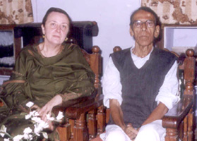
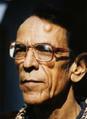
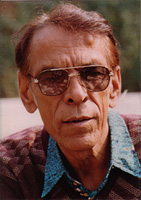

NAIYER MASUD is the foremost Urdu fiction writer of the South Asian subcontinent. His works have been translated into English, French, Finnish, Spanish and Hindi. Penguin will publish the English translation of his first collection of short stories, Seemiya, as The Occult in November 2013.



NAIYER MASUD
WITH MARIAM ABOU-ZAHAB, TRANS. OF THE FRENCH ED. OF ESSENCE OF CAMPHOR (Lucknow) Dec. 2002